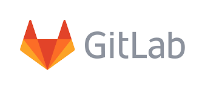

Ejemplo: Hola Mundo

Image credit: memegenerator.net

¿Control de qué?
Control de versiones es la gestión de los diversos cambios que se realizan sobre los elementos de algún producto o una configuración del mismo. Una versión, revisión o edición de un producto, es el estado en el que se encuentra el mismo en un momento dado de su desarrollo o modificación.
GIT
- Licencia Pública General de GNU versión 2
- Lo mantienen unos 280 programadores
- Distribuido
- Lanzamiento inicial: 7 de abril de 2005
- Última versión: 2.21.0 24 de febrero de 2019
Repositorios remotos


- Phabricator
- Gitea
- GitBucket
- Kallithea
- GitKraken